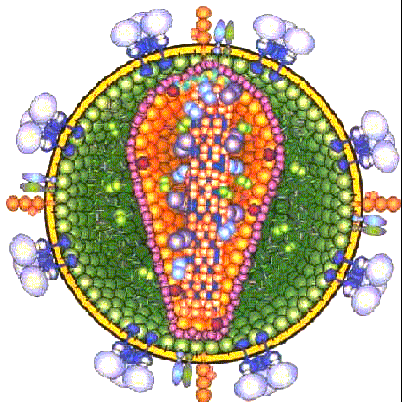
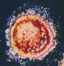
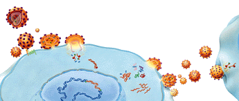
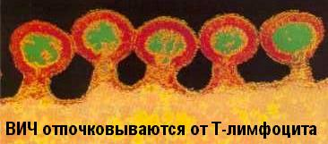
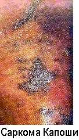

ВИЧ-инфекция

ВИЧ-инфекция, по-видимому, как эндемическое для тропической Африки заболевание существовала уже очень давно. Эпидемиологи указывают, например. что остров Окинава в Японии, где отмечаются местные случаи ВИЧ, был еще в 17 веке единственным местом империи, куда микадо разрешил доступ иностранцам - португальцам и их чернокожим рабам. Есть предположение, что от ВИЧ-инфекции скончался Эразм Роттердамский (1466-1536), носитель жизнерадостной ренессансной философии и обладатель африканской рабыни. Первые научные сообщения о случаях ВИЧ-инфекции появились в США в 1981 году, речь шла о пяти гомосексуалистах из Калифорнии, двое из которых умерли от пневмоцистной пневмонии. и о 26 наблюдениях саркомы Капоши у гомосексуалистов Нью-Йорка и Лос-Анджелеса. Молодые люди заболели в 1978-1979 гг. . В этот период о ВИЧ слышали только специалисты и он характеризовался, как “редкий вирусный иммунодефицит - синдром четырёх “Г”. Под этими “Г” нисколько не встревоженные сторонники мнемонического подхода в медицинском образовании, еще не подозревая, с каким драконом они имеют дело, подразумевали основные, характерные для первых исследований, эпидемиологические группы риска - гомосексуалистов, гемофиликов, героиновых наркоманов и выходцев с острова Гаити. Постепенно, однако, стало ясно, что вне внимания медиков оставался столь распространенный и опасный синдром, что по отношению к нему литера “Г” может означать только одно - глобальный характер опасности.В 1983 году зарегистрировали уже 2200 случаев в 14 странах (Р.Х. Бакли). В 1986 г. в одних только США число инфицированных возросло до 13000 (Дж. Десмайтер). В 1988 году регистрируется 55 000 инфицированных только в США и, по приблизительной оценке, имеется около полутора миллионов - во всём мире (Р. Котран и соавт., 1989). Оценка на 1992 год дала уже 12,9 млн инфицированных, из них - 1, 18 млн в США и Канаде(Дж. Манн и соавт, 1992). В 1993 году в США уже около 307 тыс. больных, а в мире более 718 тыс. только зарегистрированных случаев ВИЧ и до 13 млн инфицированных (А.С. Фоси, Х.К. Лэйн). Наконец, по данным 1998 года в мире имеется не менее 5 млн человек с клиническими признаками ВИЧ, более 20 000 000 инфицированных и 60 000 умерших от этой болезни за 1995 год только в США, где ВИЧ-инфекция стала основной причиной смерти взрослых мужчин, а для ряда штатов - и женщин. (П. Чандрасома и К. Тэйлор, 1998). Прогнозы ВОЗ дают, ориентировочно, значительно более 40 000 000 инфицированных в мире к 2000 году. Кроме США болезнь катастрофически распространена в странах тропической Африки, например, в Заире и Уганде поражено от 3 до 6 % населения. В Кении заражено 9 из каждых 10 обследованных проституток. Более 70% поражённых живет именно в тропической Африке. В карибских и латиноамериканских государствах, особенно, Гаити и Бразилии, более 1 млн инфицированных. В Индии и Тайланде эпидемия быстро прогрессирует (более 1,5 млн инфицированных). В европейских странах заражено более полумиллиона человек, при этом больше всего случаев во Франции. Бывший СССР, вместе с исламскими государствами и КНР, долго оставался в стороне от распространения эпидемии. Однако, уже в 1998 году, по данным Г. Онищенко, в России было зарегистрировано 8313 больных и их число быстро увеличивается. Среди республик СНГ больше всего случаев ВИЧ-инфекции на Украине.
Современные тенденции эпидемиологии ВИЧ-инфекции позволяют полагать, что от нее не застрахованы граждане любой страны и носители любых сексуально-культурных стереотипов. Столь стремительное развитие эпидемии данной инфекции породило, в паранояльной обстановке конца холодной войны, у подверженных паралогическому мышлению авторов даже спекуляции относительно искусственного происхождения вируса, созданного, будто бы, как биологическое оружие. На самом деле, в истории человечества неоднократно бывали случаи появления (как и исчезновения) неизвестно откуда взявшихся опасных инфекций. Закономерности эволюции микроорганизмов и, особенно, вирусов животных и человека, не позволяют исключить скачкообразного мутационного приобретения инфекционным агентом новых свойств, стремительно меняющих эпидемиологию и течение инфекции.
В истории патологии осталась, например “лондонская лихорадка” - крайне тяжёлое и высокозаразное респираторное заболевание с геморрагическим синдромом, которое в конце 17 - начале 18 столетия дало 6 эпидемических вспышек в Англии и Голландии, наводя ужас на врачей высокой летальностью и контагиозностью, а затем полностью исчезло с эпидемиологического горизонта. Синдром приобретённого вирусного иммунодефицита человека (СПИД) передаётся половым путём, причём при ректальных (риск более 50%), вагинальных (риск от 15 до 50 %) и эпизодически - даже при оральных половых контактах. Этому способствуют травмы и эрозии слизистых. Инфекция может быть передана трансмиссивно через кровь и все ее продукты, кроме иммуноглобулинов, альбумина и антитромбина, а также с трансплантатами и спермой при искусственном осеменении. Риск заражения при случайном уколе иглой, контаминированной кровью инфицированного человека, оценивается как 3 шанса из 1000. Для сравнения, в аналогичной ситуации риск получить гепатит В - не менее чем один к пяти. Около 30% плодов больных матерей инфицируются трансплацентарно. Доказана возможность перорального заражения при грудном вскармливании через молозиво и материнское молоко. Нет прямых доказательств передачи вируса через слюну, мочу, слёзы и другие выделения, хотя он там и обнаружен. Отмечены единичные случаи передачи ВИЧ от младенцев матерям при наличии микротравм сосков матери и язв слизистой рта у инфицированных детей, в процессе грудного вскармливания. ВИЧ может попадать в организм кровососущих насекомых, но передача инфекции через их укус не доказана. Таким образом, группами наибольшего риска являются гомосексуалисты, наркоманы, вводящие наркотики внутривенно, реципиенты препаратов крови, гетеросексуальные половые партнёры всех вышеперечисленных лиц. В странах с наивысшей частотой ВИЧ-инфекции риск для женщин и детей существенно больше, чем в Северной Америке и Европе, а гетеросексуальные половые контакты стали основными при передаче СПИД.

СПИД вызывает РНК-вирус (ВИЧ) из семейства ретровирусов, подсемейство лентивирусов. ВИЧ-1, ответственный за большинство случаев болезни выделен и охарактеризован в 1983-1984 году (Р. Галло и соавт., П. Монтаньи 1983). Он оказался родственным обезьяньему вирусу SIV, также повинному в инфекционном иммунодефиците у шимпанзе. В 1986 г. обнаружен другой возбудитель ВИЧ-2, имеющий 40% гомологию с первым, распространённый более всего в Западной Африке и вызывающий менее тяжёлую форму СПИД. Этот вирус родственен вирусу SIV мартышек мангаби. Имеется три штамма вируса, различаемые по белку капсида env - M,O, и E.Благодаря белку gp120 вирус соединяется с CD4-маркером и, при участии своего белка- фъюзогена gp41, проникает в Т-лимфоциты-регуляторы и макрофаги.

Обратная транскиптаза копирует в виде ДНК геном вируса, а интеграза позволяет копии вирусной программы встроиться в геном хозяйских клеток. Активация заражённых лимфоцитов и макрофагов способствует синтезу и сборке компонентов новых вирионов.
В начале патогенеза болезни следует фаза острой вирусемии, которая сопровождается освобождением лимфокинов и активацией клеток иммунной системы и напоминает по проявлениям мононуклеоз. В результате интрацеллюлярного проникновения вирус оказывается внутри АПК и лимфоцитов в лимфоидных органах, где продолжает размножаться, клинические проявления острой виремии затухают, и начинается латентный период, длящийся, в среднем, несколько лет. На протяжении первых 6 месяцев формируются антитела к вирусу, которые, однако, защиты не обеспечивают, хотя и служат для диагностики. Следует учитывать, что в течение первых 3 месяцев кровь, содержащая вирус, может оставаться серонегативной из-за недостаточного титра антител.В латентном периоде прогрессивно снижаются число и функциональные потенции CD4-положительных лимфоцитов. Функции этих клеток, включая синтез цитокинов, взаимодействие с цитотоксическими лимфоцитами и В-клетками, ослабевают раньше, чем возникает их количественный дефицит. Вирус персистирует в лимфоузлах, вызывая лимфаденопатию. Когда число CD4-лимфоцитов падает ниже 200 клеток на микролитр плазмы, начинается манифестная стадия СПИД, прежде всего, проявляющаяся так называемым СПИД-ассоциированным симптомокомплексом (персистирующая генерализованная лимфаденопатия, симптомы системного действия цитокинов и кожные грибковые поражения), а затем прогрессирующей сочетанной оппортунистической инфекцией. Наиболее типичны пневмоцистная интерстициальная пневмония, кандидамикоз пищевода, атипичные микобактериозы (М.avium), токсоплазмоз головного мозга, криптоспоридиоз кишечника, системная цитомегаловирусная и герпетическая инфекции, паповавирусная прогрессивная многоочаговая лейкоэнцефалопатия. Встречаются криптококкоз, гистоплазмоз, иерсениоз и туберкулёз. Лишенные Т-хелперской помощи, В-лимфоциты снижают свой стимулированный ответ на антигены, но проявляют повышенную спонтанную антителообразующую и цитокинсинтезирующую активность. Результатом этого является продукция аутоантител, избытка IgM низкой аффинности и ИЛ-6, а также ФНОa. Вследствие действия цитокинов усиливается катаболизм и пациент худеет, воспроизводятся многие симптомы, сопровождающие цитокиновый ответ (см. выше). Аутоаллергия может вызывать миелопатию, полинейропатии, а по мнению А.Я. Кульберга - даже блокаду ростовых рецепторов и нарушение регенеративных и анаболических процессов у больных. Вирусный белок gp120 обладает высокой степенью молекулярного сходства (до 70% общих аминокислотных последовательностей) с инсулином и эпидермальным фактором роста. Именно эти особенности вызывают у некоторых больных быстропрогрессирующие кахексию и дистрофические процессы, под влиянием перекрёстнореагирующих с анаболическими гормонами аутоантител. Часто обнаруживаются аутоиммунные гемоцитопении, аутоантитела к белкам плазмы и тироглобулину, антиядерные и антикардиолипиновые иммуноглобулины. Аутоантитела к гликопротеидам ГКГС способны вносить разлад в клеточную кооперацию при иммунном ответе. По мнению Дж.Р. Кеннеди (1990) полагает, что вирус действует как гомолог эндогенных иммуносупрессивных анти-CD4 лигандов. Так как ВИЧ менее цитопатогенен для макрофагов, то в них он персистирует и разносится по организму. Макрофагальные функции, включая представление антигена и продукцию монокинов, при этом страдают. Из-за дефицита цитокиновой поддержки со стороны лимфоцитов хелперов-индукторов и макрофагов снижается цитолитическая активность нормальных киллеров. Лица с определёнными особенностями одного из макрофагальных СD-рецепторов менее подвержены ВИЧ-инфекции. Их процент особенно велик в северо-западной части Европы.
ВИЧ проникает в глиальные клетки и нейроны, поскольку некоторые из них экспрессируют CD4, а другие - галактозилцерамид, альтернативный входной рецептор для вируса. Нейропатия при СПИД частично обусловлена аутоаллергическими механизмами, частично - цитокинами, однако отмечена и прямая нейротоксичность вирусного белка gp120. Кроме того, этот белок проявляет высокую степень структурного совпадения с нейролейкином - одним из важных факторов роста нейронов.

Наиболее загадочный элемент клинической картины СПИД - “саркома” Капоши. Доказано, что это не саркома, более того - вообще не опухолевая, а реактивная поликлональная гиперплазия сосудистых эндотелиальных и гладкомышечных клеток, в которой не экспрессированы онкогены и нет мутаций. Само название - еще один пример вводящего в заблуждение традиционного термина. Патогенез пролиферации Капоши связан с действием вирусного ростового фактора tat и паракринных цитокинов (ИЛ-6, ИЛ-1b, ГМ-КСФ, основного фактора роста фибробластов и онкостатина М) на сосудистые клетки. Еще одна загадка явления Капоши - его особая эпидемиологическая связь с гомосексуализмом. СПИД у гетеросексуалов чаще протекает без этого симптома. Предполагают, что дело может быть в ректальной передаче со спермой неких ростовых факторов или в наличии еще неизвестного, параллельно передаваемого инфекционного агента. Тем не менее, при СПИД учащаются и истинные неоплазмы - в основном, характерна необычно высокая частота В-лимфом головного мозга и других локализаций, а у женщин - инвазивных опухолей шейки матки.В заключение хотелось бы подчеркнуть, что в далеко зашедшей стадии данная форма вторичного иммунодефицита не оставляет невовлечённым в патологический процесс ни один орган. В частности, установлено закономерное развитие хронической надпочечниковой недостаточности у лиц, больных СПИД. Причиной служит адреналит, вызванный Mycobacterium avium. Особенно страдает минералокортикоидная функция. СПИД - одна из главных тем медицинских публикаций. Подробное рассмотрение его клинических аспектов не входит в задачи данной книги. Интересующийся этими вопросами читатель почерпнёт много полезной информации из превосходного обзора Г. Холландера и М. Каца “ВИЧ-инфекция”(1997).
|
|
|
|
|
|